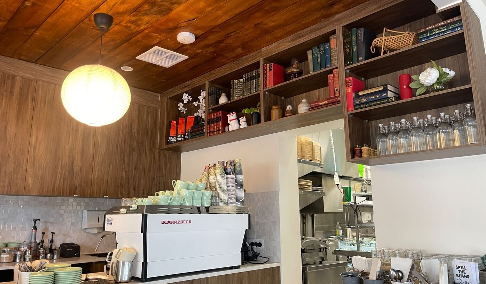

OUR PLACE IN LINDEN PARK
About our Asian-fusion cafe
Good coffee, bold Asian flavours, lovely people and happy puppies. Discover the story behind SPILL THE BEANS CAFE in Adelaide's eastern suburbs.
Our Story

SPILL THE BEANS CAFE is an independent Asian-fusion cafe at 89 Devereux Road in Linden Park. We bring together Western breakfast favourites and Asian flavours in a menu built for the way Adelaide loves to brunch. ST. ALi coffee, friendly service and a welcoming atmosphere are part of our everyday routine.
After a renovation, we reopened in February 2026 with a brighter, refreshed space for regulars and new faces alike. Our dog-friendly verandah is still a favourite stop for neighbourhood walks, coffee runs and catch-ups. Come for an early coffee, stay for brunch and make yourself at home.
PRESS
Featured in Glam Adelaide
In February 2026, Glam Adelaide shared the story of our renovation and reopening, highlighting the renewed Linden Park cafe, our Asian-fusion direction and the people (and pets) who make it special.
Read the Glam Adelaide articleYOUR QUESTIONS
Frequently asked questions
Wondering about dog-friendly brunch, bookings, food or parking near Burnside? Here's what to know before you visit.
What kind of cafe is SPILL THE BEANS CAFE?
We are an Asian-fusion cafe in Linden Park, Adelaide. Our menu pairs familiar breakfast and brunch favourites with bold Asian flavours, alongside ST. ALi coffee and matcha.
Do you take reservations?
Yes. Walk-ins are always welcome, and we recommend calling ahead for larger groups or a preferred time. Phone us on (08) 8338 3899 during opening hours.
Do you accept walk-ins?
Absolutely. You can drop in for breakfast, brunch or coffee. If tables are full, the team will do its best to seat you when one becomes available.
Can you help with vegetarian, vegan, gluten-free or other dietary needs?
We have vegetarian options and will do our best to help with dietary requirements. Please tell our team about allergies or restrictions before ordering so we can check ingredients and kitchen handling; we cannot guarantee an allergen-free environment.
Is there parking nearby?
Street parking is available on Devereux Road and surrounding streets. Please follow local parking signs.
Can we bring our own cake or wine?
You are welcome to ask about bringing a cake for a special occasion. We do not permit BYO alcohol. Please contact the cafe before your visit to confirm any arrangements.
Is SPILL family-friendly?
Yes, families and little ones are welcome. Ask our team about suitable menu choices for children.
Do you sell gift cards?
Yes, please ask in-store about gift cards, or email admin@spill.cafe for details.
Can we bring our dog to the cafe?
Yes! Our outdoor verandah is dog-friendly, making SPILL a handy brunch stop near Burnside after a walk. Please keep dogs on a lead and clear of the walkway.
Do you offer takeaway and online delivery?
Yes. Order takeaway coffee and food at the cafe, or check our Uber Eats page for online delivery options available to your address.